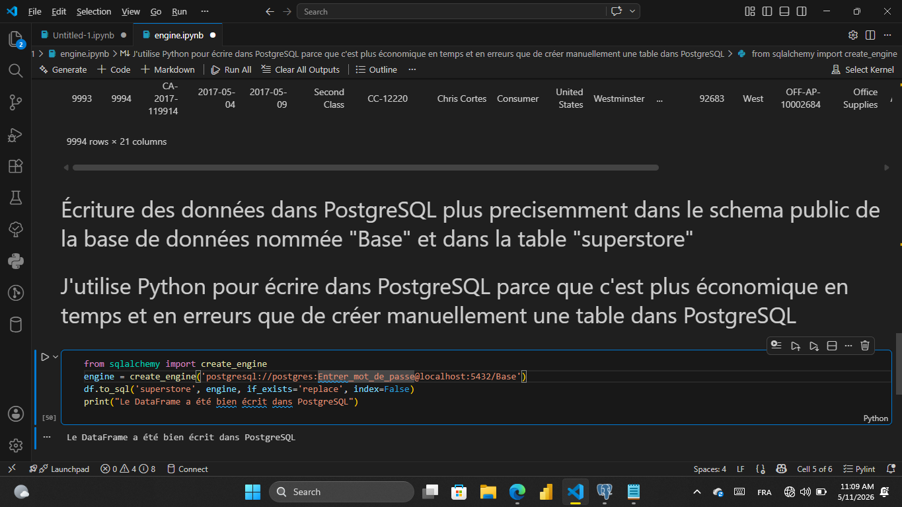
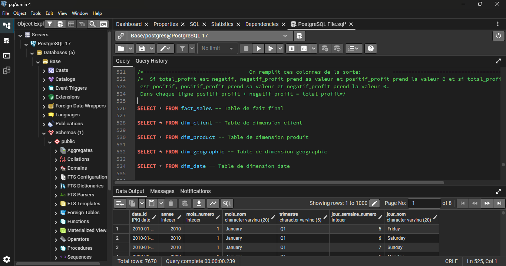
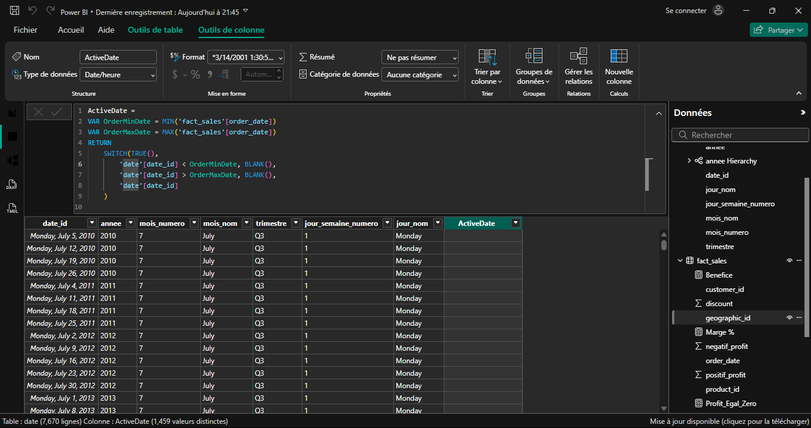
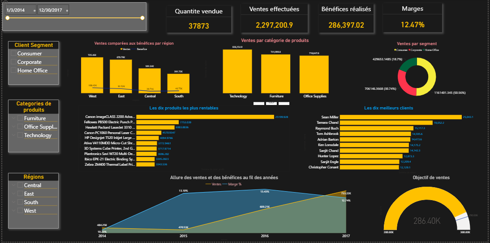
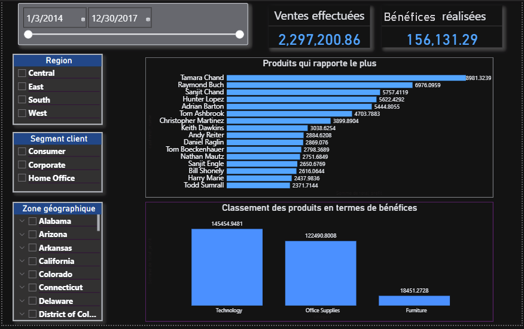
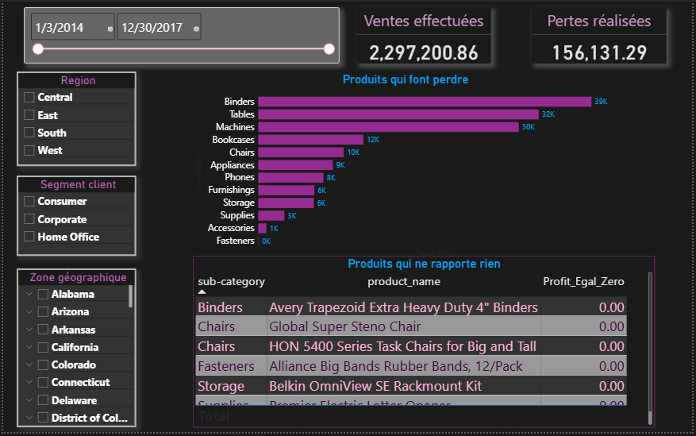
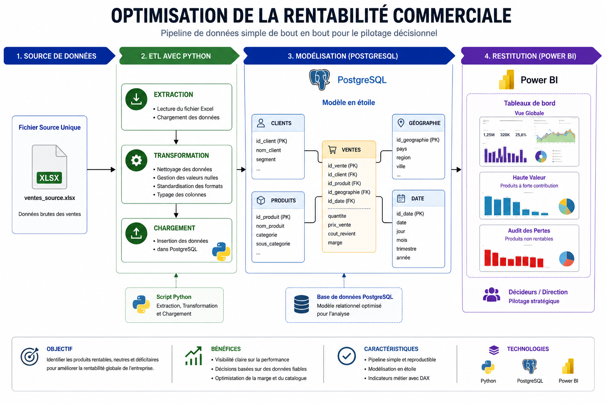

Problème de l'entreprise
Contexte client
Variabilité & Marge
"L'entreprise fait face à une variabilité de ses ventes et souhaite améliorer sa rentabilité globale. Elle a besoin d'identifier précisément les produits qui génèrent de la valeur, ceux qui sont neutres et ceux qui font perdre de l'argent."
Performances invisibles
Aucun indicateur consolidé pour suivre la rentabilité produit en temps réel.
Détection tardive des pertes
Les produits déficitaires sont identifiés avec trop de retard pour corriger le tir.
Décisions sans visibilité
Les choix stratégiques sont pris sans données fiables et centralisées.
Solution : Un pipeline complet Python → PostgreSQL → Power BI.
Pipeline de Données
Architecture ETL & BI complète — extraction, modélisation, restitution.

Extraction & Transformation
Mini ETL Python
- Extract : Collecte et lecture des fichiers de ventes brutes.
- Transform : Nettoyage, typage strict, gestion des valeurs nulles.
- Load : Injection propre dans PostgreSQL via psycopg2.

Modélisation & Stockage
Schéma en Étoile
- EDA : Analyse exploratoire pour comprendre la distribution des données.
- Star Schema : Tables faits & dimensions normalisées.
- Vues SQL : Requêtes optimisées pour la couche BI.

Restitution & Décision
Mesures DAX
- KPIs : CA, coût de revient, marge brute par produit.
- Classif. ABC : Segmentation stratégique du catalogue.
- Métier : Analyse des goulets d'étranglement de la marge.
Tableau de Bord Power BI
Cliquez sur un aperçu pour l'agrandir.

Vue Globale
Synthèse des KPIs clés et visibilité directe sur la performance globale pour piloter la stratégie.

Haute Valeur
Analyse ciblée des produits générateurs de valeur — ceux qui soutiennent réellement la croissance.

Audit des Pertes
Identification précise des articles non rentables pour ajuster le catalogue et réduire les coûts.

Résumé de la solution
Ce projet couvre l'intégralité du cycle de la donnée. L'extraction et la transformation des ventes brutes ont été automatisées avec Python, un entrepôt relationnel structuré sur PostgreSQL Star Schema, et des mesures DAX précises pour restituer une vision claire de la rentabilité réelle par produit.
3
Étapes
pipeline
ABC
Classif.
produits
3
Dashboards
BI